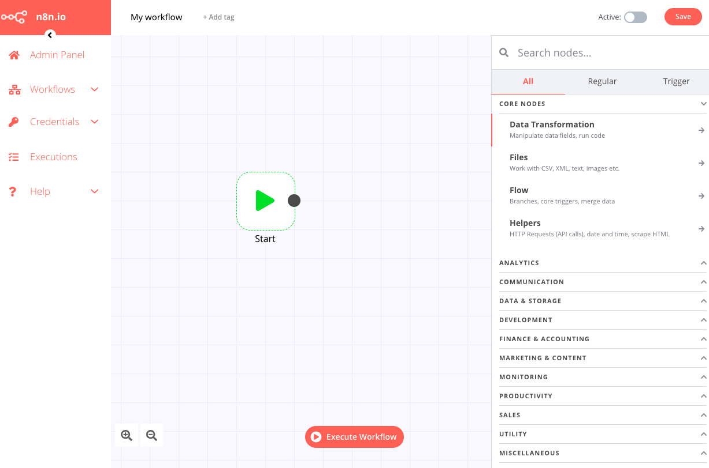
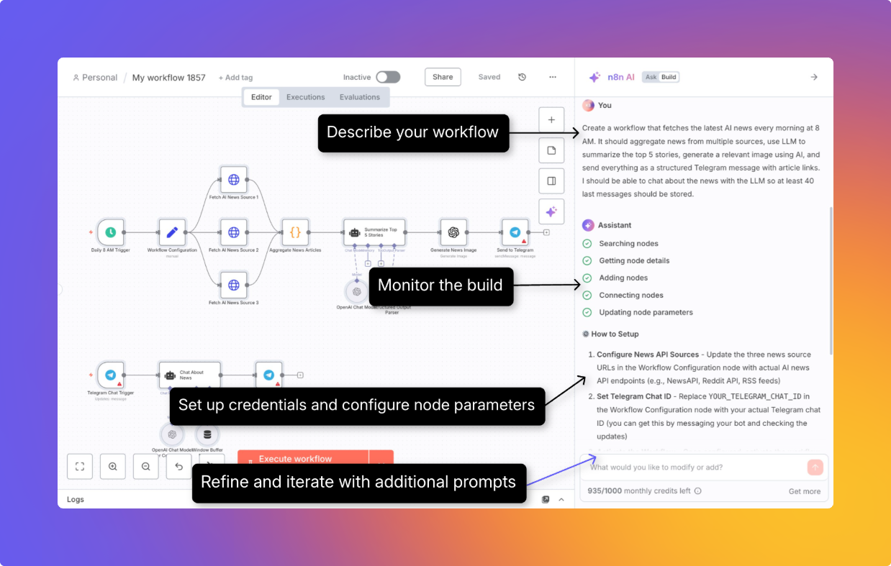
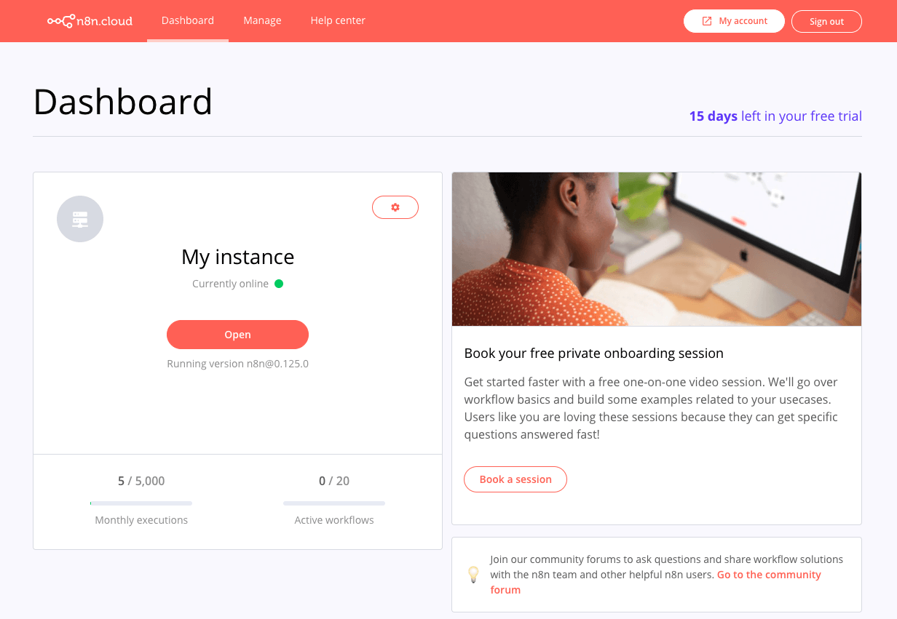
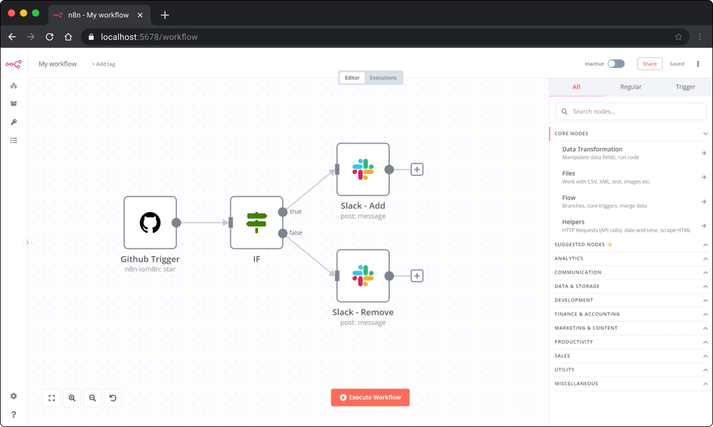
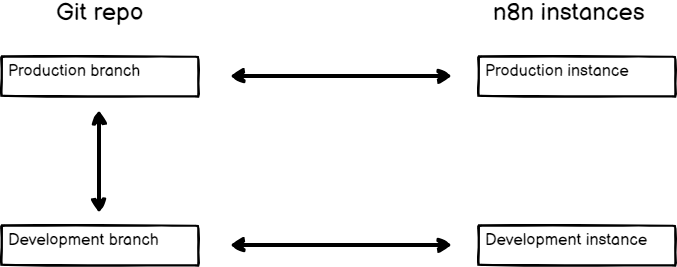
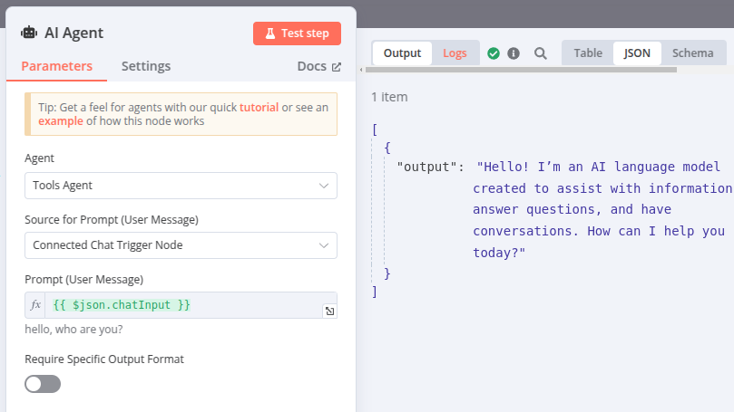

目录（8 章）
01📊 n8n 是什么：vs Zapier / Make 完整对比 02🚀 安装与快速上手：5 分钟跑通第一个 03🧩 核心功能：节点、触发器与 5 个实战工作流 04🤖 AI Agent 实战：接 OpenAI 和 Claude 05🔧 进阶技巧：Code Node、错误处理、安全 06🔌 HTTP Request：对接任意 API 07🌿 版本控制与团队协作（Git 集成） 08📡 监控告警与生产运维📖 这本手册怎么读
这本书和官网 wiki《n8n 工作流自动化》同源（jiangren.com.au/wiki/n8n-workflow-automation，免费、不用注册，官网那份持续更新）。完全没碰过 n8n 的，第 1、2 章搞清楚它值不值得用、5 分钟跑通；想做 AI 自动化的，第 4 章是重点——接 OpenAI / Claude 搭 Agent 不用写框架代码；已经在用想上生产的，第 5 到 8 章讲 Code Node、错误处理、Git 版本控制、监控告警，全是踩过坑的配置。书里的界面图来自 n8n 官方文档，命令和 docker-compose 都能直接复制。

📊 n8n 是什么：自动化工具的新选择

n8n 是一个开源的工作流自动化平台，让你用可视化节点连接各种应用，自动完成重复性任务——不管是发邮件、同步数据库、还是调用 AI，都能在一个界面里搞定。
n8n 解决的核心问题
每个开发者和职场人都有一堆"我应该自动化但一直没做"的任务：
- 客户填了表单 → 手动复制到 CRM → 手动发欢迎邮件
- 代码 push 成功 → 手动去 Slack 发通知
- 每天早上手动汇总几个渠道的数据到 Excel
n8n 让你用节点（Node）把这些步骤连起来，触发一次，全程自动。
n8n vs Zapier vs Make：完整对比（2026）
| 维度 | n8n（自托管） | n8n Cloud | Zapier | Make |
|---|---|---|---|---|
| 入门价格 | 免费（服务器 $5–20/月） | €24/月（Starter） | $19.99/月 | $10.59/月（Core） |
| 免费配额 | 无限执行 | 无免费计划（14天试用） | 100 tasks/月 | 1,000 ops/月 |
| 计费单位 | — | 每次 workflow 执行 | 每个步骤（task） | 每个模块（operation） |
| 10步骤跑 1,000 次/月 | 免费 | 消耗 1,000 executions（Starter 够用） | 消耗 10,000 tasks（需 $49+/月套餐） | 消耗 10,000 ops（Core $10.59/月） |
| 集成数量 | 1,000+ 原生 + 无限 HTTP | 同左 | 6,000+ | 1,500+ |
| AI Agent | 原生 LangChain，70+ AI 节点 | 同左 | Zapier Agents（受限） | Maia（受限） |
| 代码能力 | JS / Python，支持 npm | 同左 | 极简 JS 片段 | 受限 |
| 数据主权 | 完全自控 | 数据在 n8n 欧洲服务器 | 数据在 Zapier 美国服务器 | 数据在 Make 服务器 |
| 学习曲线 | 中（开发者友好） | 同左 | 低 | 中低 |
| 适合人群 | 开发者 / 技术团队 | 技术团队 + 不想运维 | 非技术人员 | 中间层 |
计费模型：最容易踩坑的差异
三个平台的计费逻辑完全不同，用相同的使用量算出来的费用天差地别。
Zapier 按 task 收费：工作流里每个步骤都算一个 task。一个 10 步骤的 Zap 跑一次 = 10 tasks。每月跑 1,000 次 = 消耗 10,000 tasks，Professional 计划 750 tasks 根本不够，需要升级到更贵的套餐。
Make 按 operation 收费：和 Zapier 类似，每个模块算一个 operation。1,000 次运行 × 10 步骤 = 10,000 operations，Core 计划（$10.59/月）刚好够——但复杂场景步骤数多，很快超限。
n8n 按执行次数收费（云端）或完全免费（自托管）：整个 workflow 不管几个节点，跑一次只算一次执行。同样是 10 步骤跑 1,000 次，只消耗 1,000 executions，Starter（€24/月，2,500 executions）完全够用。自托管版本没有任何执行次数限制。
结论：步骤越多、运行越频繁，Zapier 的账单涨得越快。n8n 的计费模型对工程师友好得多。
自托管 vs 云端：决策树
这是很多人对 n8n 最大的疑问。按以下条件决策：
你需要 n8n，那就问自己： 1. 是否有 VPS / Docker 使用经验？ ├── 没有 → 用 n8n Cloud（Starter €24/月，省去运维麻烦） └── 有 → 继续往下 2. 数据是否有合规要求（GDPR / 不能出服务器）？ ├── 是 → 必须自托管 └── 否 → 继续往下 3. 每月执行量大概多少？ ├── < 2,500 次 → n8n Cloud Starter 够用（€24/月） ├── 2,500–10,000 次 → n8n Cloud Pro（€60/月）或自托管（$10/月 VPS） └── > 10,000 次 → 自托管，省钱省限制 4. 需要深度定制（自定义节点 / 私有 npm 包）？ └── 是 → 自托管
自托管的实际成本
用 Docker 跑 n8n，最简单的启动命令：
docker run -it --rm \ --name n8n \ -p 5678:5678 \ -v ~/.n8n:/home/node/.n8n \ n8nio/n8n
本地测试用这个就够了。生产环境需要持久化 + 重启策略 + 反向代理，推荐 docker-compose：
# docker-compose.yml（最小生产可用配置）
version: '3.8'
services:
n8n:
image: n8nio/n8n
restart: unless-stopped
ports:
- "5678:5678"
environment:
- N8N_HOST=yourdomain.com
- N8N_PROTOCOL=https
- WEBHOOK_URL=https://yourdomain.com/
- N8N_BASIC_AUTH_ACTIVE=true
- N8N_BASIC_AUTH_USER=admin
- N8N_BASIC_AUTH_PASSWORD=changeme
volumes:
- n8n_data:/home/node/.n8n
volumes:
n8n_data:
一台 2 核 2GB RAM 的 VPS（Hetzner 最低档 €4.5/月，Digital Ocean $12/月）完全够跑几十个中等复杂度的工作流。对比 n8n Cloud Pro 的 €60/月，一年能省下 €660 以上。
自托管的注意事项
- Webhook 需要公网域名：Webhook 触发型工作流（GitHub push 触发、表单提交触发）需要 n8n 实例能被外部访问，必须配域名 + SSL（用 Nginx + Certbot 即可）。
- 版本更新需手动维护：云端自动更新，自托管需要定期执行
docker pull n8nio/n8n:latest && docker-compose up -d，大版本升级前一定看 changelog。 - 单点故障：社区版不支持多实例水平扩展，实例挂了 webhook 失效。高可用场景考虑加外部队列（Redis）或直接用 n8n Cloud。
n8n 最大的差异化优势
1. 自托管免费，真·无限制
社区版跑在你自己的服务器上，任务数、workflow 数、用户数全无限制。Zapier 750 tasks/月要 $19.99，n8n 你可以跑几百万次都是免费的——成本只是 VPS 费。
2. 真实代码能力
n8n 的 Code Node 支持完整的 JavaScript 和 Python，还能直接 require() npm 包。Zapier 的 Code 步骤只支持极简的 JS 片段，碰到稍微复杂的逻辑就得想别的办法。
3. AI Agent 原生集成
n8n 2.0 内置 LangChain，有 70+ AI 专属节点，构建 AI Agent 不需要写一行代码。接 OpenAI、Claude、Mistral、Ollama（本地模型）都原生支持，不需要中间层。
4. HTTP Node 连接任何 API
没有内置集成的服务怎么办？n8n 的 HTTP Request 节点能调用任何 REST API，支持 OAuth、Bearer Token、Basic Auth，配置完全可视化。这意味着 n8n 的"1,000+ 集成"在实际使用中是无上限的。
什么时候选 n8n？
选 n8n 的场景：
- 你或团队有基本的技术能力（会看 JSON、会写简单 JS）
- 工作流需要处理数据逻辑、条件分支、循环迭代
- 需要接入自建 API 或内部数据库
- 想做 AI Agent 工作流（接 OpenAI、Claude、本地模型）
- 不想让数据经过第三方服务器（GDPR、隐私合规）
- 使用量大，Zapier 账单让你肉疼
选 Zapier 的场景：
- 完全非技术人员，不想碰任何代码
- 需要连接很冷门的 SaaS 工具（Zapier 6,000+ 集成确实更广）
- 快速验证想法，不在乎成本
选 Make 的场景：
- 介于两者之间：比 Zapier 便宜，比 n8n 上手容易
- 场景复杂度中等，但不需要写代码
n8n 的"公平代码"许可
n8n 使用 Sustainable Use License——不是 MIT，但也不是商业闭源：
- 个人和团队内部使用：完全免费
- 给客户提供 n8n 托管服务（managed service 形式）：需要商业许可
- 查看源码、修改代码：允许
对 99% 的使用场景来说，把它当免费开源软件用即可。唯一需要注意的是：如果你的商业模式是"帮客户搭建并托管 n8n"，才需要付商业许可费。自己团队内部用，不受这个限制。
🚀 安装与快速上手：5 分钟跑起第一个工作流

n8n 有三种安装方式，选最适合你的场景即可。
方式一：npx 快速体验（推荐新手）
只需要 Node.js 18+，无需任何配置：
npx n8n
运行后打开浏览器访问 http://localhost:5678，就能看到 n8n 编辑器。
方式二：Docker 自托管（推荐生产）
官方 Docker 镜像，数据持久化：
# 创建持久化数据卷 docker volume create n8n_data # 运行 n8n docker run -it --rm \ --name n8n \ -p 5678:5678 \ -v n8n_data:/home/node/.n8n \ docker.n8n.io/n8nio/n8n
访问 http://localhost:5678 即可。
docker-compose 方式（推荐，方便管理）：
version: "3"
services:
n8n:
image: docker.n8n.io/n8nio/n8n
restart: always
ports:
- "5678:5678"
environment:
- N8N_BASIC_AUTH_ACTIVE=true
- N8N_BASIC_AUTH_USER=admin
- N8N_BASIC_AUTH_PASSWORD=your_password
- WEBHOOK_URL=https://your-domain.com/
volumes:
- n8n_data:/home/node/.n8n
volumes:
n8n_data:
docker-compose up -d
方式三：n8n Cloud（无需服务器）
直接访问 n8n.io/cloud 注册，有免费试用。不需要维护服务器，适合快速验证想法。
5 分钟创建第一个工作流
用一个真实场景入门：当 Webhook 收到请求时，自动发 Slack 消息。
Step 1：打开编辑器，新建 Workflow
访问 http://localhost:5678，点击右上角 New workflow。
Step 2：添加 Webhook Trigger 节点
点击画布中央的 +，搜索 Webhook，选择 Webhook 节点。
配置：
- HTTP Method：POST
- Path：
/my-first-webhook（自定义路径） - 点击 Test URL 复制测试地址
Step 3：添加 Slack 节点
点击 Webhook 节点右侧的 +，搜索 Slack，选择 Send a message 操作。
配置：
- Credential：点击 Add，输入 Slack Bot Token（从 Slack App 管理页获取）
- Channel：
#general（或你的频道 ID） - Message：
收到新请求: {{ $json.body.message }}（用表达式引用传入的数据）
Step 4：测试运行
- 点击 Webhook 节点，点击 Listen for test event
- 用 curl 发送测试请求：
curl -X POST http://localhost:5678/webhook-test/my-first-webhook \
-H "Content-Type: application/json" \
-d '{"message": "Hello from n8n!"}'
- 看到 n8n 编辑器里节点变绿，Slack 收到消息 — 工作流跑通了。
Step 5：激活 Workflow
点击右上角 Inactive 切换为 Active，工作流就正式运行了。之后所有发到该 Webhook 的请求都会自动触发。
核心概念速览
| 概念 | 说明 |
|---|---|
| Workflow | 一个自动化流程，由多个节点组成 |
| Node | 单个功能单元，可以是触发器、操作、或数据处理 |
| Trigger | 工作流的起点，比如 Webhook、定时任务、邮件到达 |
| Credential | API Key 等认证信息，加密存储，可在多个 workflow 复用 |
| Execution | 工作流每次运行的记录，可查看输入/输出和错误 |
| Expression | {{ }} 语法，动态引用其他节点的数据 |
表达式示例：
{{ $json.body.email }} // 引用当前节点的输入数据
{{ $node["HTTP Request"].json.data }} // 引用指定节点的输出
{{ $now.format('YYYY-MM-DD') }} // 当前日期格式化
🧩 核心功能详解：节点、触发器与数据流


n8n 的核心是节点（Node）之间的数据流动。每个节点接收上游数据、处理后输出给下游。理解这一点，你就能设计任意复杂的工作流。
节点的三大类型
1. Trigger 节点（触发器）
工作流的起点，决定什么时候运行。
| 触发器 | 说明 | 典型用法 |
|---|---|---|
| Webhook | 接收 HTTP 请求时触发 | 接收表单提交、API 回调 |
| Schedule | 定时触发（Cron 表达式） | 每天早上 8 点跑数据报告 |
| Email Trigger | 收到邮件时触发 | 自动处理客户邮件 |
| File System | 文件变化时触发 | 新文件上传自动处理 |
| Manual | 手动点击触发 | 测试或一次性任务 |
Schedule 节点的 Cron 表达式：
0 8 * * 1-5 // 周一到周五早上 8:00 0 */2 * * * // 每 2 小时 0 9 * * 1 // 每周一早上 9:00
2. Action 节点（操作）
对各类服务执行操作的节点，n8n 有 1,000+ 内置集成。
常用集成：
通讯: Slack、Gmail、Telegram、Notion 数据: PostgreSQL、MySQL、MongoDB、Google Sheets 代码: HTTP Request、GraphQL、Execute Command 云服务: AWS S3、Google Drive、Airtable AI: OpenAI、Anthropic Claude、Hugging Face
3. Logic 节点（逻辑控制）
| 节点 | 功能 |
|---|---|
| IF | 条件分支，根据数据走不同路径 |
| Switch | 多条件分支 |
| Merge | 合并多个分支的数据 |
| Loop Over Items | 遍历数组中的每一项 |
| Wait | 暂停工作流，等待指定时间或外部事件 |
| Set | 设置/修改数据字段 |
| Code | 执行自定义 JavaScript 或 Python |
5 个实战工作流
工作流 1：GitHub PR 自动通知 Slack
场景：有人提交 PR，自动发 Slack 提醒代码 reviewer。
节点链： Webhook → IF（判断是否为 PR 事件）→ Slack
Webhook 配置: POST /github-webhook
IF 条件: {{ $json.body.action }} === "opened" AND {{ $json.body.pull_request }} 存在
Slack 消息:
"🔔 新 PR: {{ $json.body.pull_request.title }}
作者: {{ $json.body.pull_request.user.login }}
链接: {{ $json.body.pull_request.html_url }}"
在 GitHub 仓库 Settings → Webhooks 填入 n8n 的 Webhook URL，事件选 Pull requests。
工作流 2：每日数据汇总邮件
场景：每天早上 8 点从数据库查询前一天数据，发邮件给管理层。
节点链： Schedule → PostgreSQL → Code（格式化）→ Gmail
// Code 节点：把数据库查询结果格式化为 HTML 表格
const items = $input.all();
const rows = items.map(item =>
`<tr><td>${item.json.date}</td><td>${item.json.orders}</td><td>${item.json.revenue}</td></tr>`
).join('');
return [{
json: {
html: `<table><thead><tr><th>日期</th><th>订单数</th><th>收入</th></tr></thead>
<tbody>${rows}</tbody></table>`,
subject: `每日数据报告 - ${new Date().toLocaleDateString('zh-CN')}`
}
}];
工作流 3：表单提交自动入 CRM + 发欢迎邮件
场景：网站表单提交 → 自动创建 HubSpot 联系人 → 发个性化欢迎邮件。
节点链： Webhook → HubSpot（Create Contact）→ Gmail（Send Email）
Webhook 接收: { name, email, company, role }
HubSpot 节点:
- firstname: {{ $json.body.name.split(' ')[0] }}
- email: {{ $json.body.email }}
- company: {{ $json.body.company }}
Gmail 节点:
- To: {{ $json.body.email }}
- Subject: 欢迎加入，{{ $json.body.name.split(' ')[0] }}！
- Body: （HTML 模板）
工作流 4：文件上传自动处理
场景：用户上传 CSV 文件 → 解析数据 → 批量写入数据库。
节点链： Webhook（接收文件）→ Spreadsheet File（解析 CSV）→ Loop Over Items → PostgreSQL（Insert）
关键配置：Webhook 节点设置 Binary Data 接收文件，Spreadsheet File 节点解析 CSV 内容为 JSON 数组，Loop Over Items 遍历每行，PostgreSQL 节点批量插入。
工作流 5：Telegram Bot 查询数据库
场景：给 Telegram Bot 发消息，自动查询数据库返回结果。
节点链： Telegram Trigger → Code（解析命令）→ PostgreSQL → Telegram（回复）
// Code 节点：解析用户命令
const text = $json.message.text;
const chatId = $json.message.chat.id;
// 支持命令: /stats, /order <id>
const command = text.split(' ')[0];
const arg = text.split(' ')[1];
return [{ json: { command, arg, chatId } }];
数据流动：理解 $json 和 $node
n8n 里每个节点的输出格式是 [{ json: {...} }, { json: {...} }, ...]——一个 items 数组。
在 Expression 里引用数据：
{{ $json.fieldName }} // 当前节点输入的字段
{{ $json.nested.deep.value }} // 嵌套字段
{{ $items()[0].json.name }} // 当前节点第一个 item
{{ $node["节点名"].json.id }} // 引用指定节点的输出
{{ $workflow.id }} // 当前 workflow 的 ID
在 Code 节点里处理多条数据：
// 处理所有 items
const results = $input.all().map(item => ({
json: {
...item.json,
processed: true,
timestamp: new Date().toISOString()
}
}));
return results;
// 只返回满足条件的 items（相当于 filter）
return $input.all().filter(item => item.json.status === 'active');
🤖 AI Agent 实战：用 n8n 构建智能工作流


n8n 2.0 内置了 LangChain 集成，提供 70+ AI 专属节点。你可以在不写任何框架代码的情况下，构建有记忆、能调用工具、会推理决策的 AI Agent。
AI Agent 节点的架构
n8n 的 AI Agent 工作流由四个角色组成：
[Trigger] → [AI Agent 节点]
├── Language Model（大脑）: OpenAI GPT-4o / Claude / Gemini
├── Memory（记忆）: Window Buffer / PostgreSQL / Redis
└── Tools（工具）: Workflow Tool / HTTP Request / Calculator / ...
AI Agent 节点本身不固定模型，它是一个推理引擎框架——你可以随时换底层模型，而工作流逻辑不变。
接入 OpenAI
Step 1：添加 OpenAI Credential
- 左侧菜单 → Credentials → Add Credential
- 搜索
OpenAI，填入你的 API Key - 保存，命名为
OpenAI - Production
Step 2：创建 AI Agent 工作流
节点链： Chat Trigger → AI Agent → （可选）Slack/Gmail 回复
AI Agent 节点配置：
| 字段 | 值 |
|---|---|
| Agent | Tools Agent（推荐，支持工具调用） |
| Language Model | 选择 OpenAI Chat Model |
| Model | gpt-4o 或 gpt-4o-mini |
| System Message | 你是 JR Academy 的客服助手，只回答课程相关问题... |
| Memory | Window Buffer Memory（保留最近 10 轮对话） |
System Message 示例：
你是一个专业的技术助手，负责帮助开发团队解答问题。 规则： 1. 只回答技术问题，不讨论政治和个人话题 2. 如果不确定，明确说"我不确定，建议查阅官方文档" 3. 回答时优先给出代码示例 4. 始终用中文回复
接入 Claude（Anthropic）
Claude 在长文本处理和代码理解方面表现出色，适合文档处理类 Agent。
配置步骤
- Credentials → Add Credential → 搜索
Anthropic - 填入 Anthropic API Key（从 console.anthropic.com 获取）
- 在 AI Agent 节点的 Language Model 中选择 Anthropic Chat Model
- 选择模型：
claude-sonnet-4-6（性价比最高）或claude-opus-4-6（最强）
实战案例 1：能查数据库的客服 Bot
场景：用户通过 Telegram 问订单状态，Agent 自动查数据库返回结果。
Telegram Trigger
↓
AI Agent
├── LLM: GPT-4o
├── Memory: Window Buffer（10 轮）
├── Tool: PostgreSQL 查询（自定义 Workflow Tool）
└── Tool: 获取当前时间（内置）
↓
Telegram 回复
关键：Workflow Tool 配置
在 AI Agent 的 Tools 里添加 n8n Workflow Tool，指向另一个专门查数据库的子工作流：
子工作流（查询订单）：
Execute Workflow Trigger（接收 order_id 参数）
↓
PostgreSQL: SELECT * FROM orders WHERE id = {{ $json.order_id }}
↓
返回查询结果
Agent 会在需要查询时自动调用这个工具，把 order_id 传进去，拿到结果后再组织成自然语言回复给用户。
实战案例 2：自动化内容生成 Pipeline
场景：每天从 RSS 抓取科技新闻 → AI 总结 → 自动发 Notion 和邮件。
Schedule Trigger（每天 7:00）
↓
HTTP Request（抓取 RSS: techcrunch.com/feed/）
↓
Code（解析 XML，提取 5 条最新文章）
↓
Loop Over Items
↓（每篇文章）
OpenAI Chat Model（总结文章，输出中文摘要）
↓
Merge（合并所有摘要）
↓
Notion（创建每日简报页面）
↓
Gmail（发送简报邮件给订阅者）
OpenAI 节点 Prompt：
请用 3-5 句话总结以下英文文章，输出中文，突出对开发者最有价值的信息：
标题：{{ $json.title }}
内容：{{ $json.content }}
输出格式：
【核心观点】...
【对开发者的影响】...
【关键数据】...（如有）
记忆（Memory）节点对比
| 记忆类型 | 适用场景 | 配置复杂度 |
|---|---|---|
| Window Buffer Memory | 多轮对话，保留最近 N 轮 | 低（默认推荐） |
| Postgres Chat Memory | 持久化对话历史，多用户 | 中（需要 PG 数据库） |
| Redis Chat Memory | 高并发场景，快速读写 | 中（需要 Redis） |
| Zep | 长期记忆 + 向量检索 | 高（需要 Zep 服务） |
Window Buffer Memory 配置：
Context Window Length: 10 // 保留最近 10 条消息
Session Key: {{ $json.chatId }} // 用 chatId 区分不同用户的会话
AI Agent 调试技巧
1. 查看 Agent 的推理过程
在 n8n 执行记录里，AI Agent 节点会输出完整的 intermediateSteps，包含每次工具调用的输入/输出。这是调试 Agent 行为最直接的方式。
2. 限制工具调用次数
防止 Agent 陷入循环：
Max Iterations: 10 // AI Agent 节点设置，超过后强制停止
3. 用 System Message 约束行为
不要期望 LLM 自己"猜到"你的意图，把规则写进 System Message：
重要约束： - 你只能使用提供的工具，不能自行编造数据 - 如果工具返回空结果，回复"未找到相关信息" - 每次回复不超过 200 字
🤖 用 n8n 搭出第一个 AI Agent 工作流，想把这套自动化能力变成职场硬通货？Amelia 帮你看看离 AI 工程岗位还差什么：

🔧 进阶技巧与常见问题


掌握了基础节点之后，这些技巧能让你的工作流更健壮、更高效。
Code Node：写真实代码
n8n 的 Code Node 是它区别于 Zapier 最大的武器。支持完整的 JavaScript（Node.js 18）和 Python，能 require npm 包。
处理复杂数据转换
// 场景：把嵌套的 API 响应铺平为二维表格
const input = $input.first().json;
const users = input.data.users;
return users.flatMap(user =>
user.orders.map(order => ({
json: {
userId: user.id,
userName: user.name,
orderId: order.id,
amount: order.amount,
date: new Date(order.createdAt).toLocaleDateString('zh-CN')
}
}))
);
使用 npm 包
在 Code Node 里可以直接 require 已安装的包（n8n 内置了常用库）：
// 日期处理
const { DateTime } = require('luxon');
const formatted = DateTime.now().setZone('Asia/Shanghai').toFormat('yyyy-MM-dd HH:mm');
// 加密
const crypto = require('crypto');
const hash = crypto.createHmac('sha256', 'secret').update($json.data).digest('hex');
// JSON Schema 校验
const Ajv = require('ajv');
const ajv = new Ajv();
const valid = ajv.validate({ type: 'object', required: ['email'] }, $json);
Python Code Node
# n8n 也支持 Python（需要服务器安装 Python）
import json
from datetime import datetime
items = _input.all()
results = []
for item in items:
data = item.json
results.append({
'json': {
'processed_at': datetime.now().isoformat(),
'original': data,
'word_count': len(data.get('content', '').split())
}
})
return results
错误处理
方式一：Error Trigger 工作流
创建一个独立的"错误处理工作流"，所有工作流的报错都汇集到这里：
- 新建 workflow，添加 Error Trigger 节点（而不是普通 trigger）
- 连接 Slack 节点，发送报警通知
- 在每个生产工作流的 Settings 里，设置 Error Workflow 指向这个工作流
Error Trigger
↓
Slack: "⚠️ 工作流 {{ $json.workflow.name }} 报错
错误: {{ $json.execution.error.message }}
时间: {{ $now.format('YYYY-MM-DD HH:mm') }}
执行ID: {{ $json.execution.id }}"
方式二：节点级别的 Try/Catch
在 Settings 里开启每个节点的 Continue on Fail，然后用 IF 节点检查是否有错误：
HTTP Request（Continue on Fail: ON）
↓
IF: {{ $json.error }} 存在
├── True → 记录错误到数据库
└── False → 继续正常流程
方式三：Code Node 里 try-catch
try {
const response = await fetch($json.url);
const data = await response.json();
return [{ json: { success: true, data } }];
} catch (error) {
return [{ json: { success: false, error: error.message } }];
}
Webhook 安全配置
生产环境的 Webhook 要做鉴权，防止被随意调用。
方式一：Header 鉴权
在 Webhook 节点开启 Header Auth：
Authentication: Header Auth Name: X-Webhook-Secret Value: your-secret-token-here
调用方需要在请求 Header 里加 X-Webhook-Secret: your-secret-token-here，否则 403。
方式二：验证 GitHub/Stripe 的签名
// Code 节点：验证 GitHub Webhook 签名
const crypto = require('crypto');
const signature = $json.headers['x-hub-signature-256'];
const payload = JSON.stringify($json.body);
const secret = 'your-github-webhook-secret';
const expected = 'sha256=' + crypto
.createHmac('sha256', secret)
.update(payload)
.digest('hex');
if (signature !== expected) {
throw new Error('Invalid signature — 请求被拒绝');
}
return $input.all(); // 验证通过，继续流程
生产部署要点
环境变量管理
敏感配置通过环境变量注入，不要硬编码在工作流里：
# docker-compose.yml 的 environment 部分 - N8N_ENCRYPTION_KEY=your-32-char-encryption-key # 必须设置 - DB_TYPE=postgresdb # 使用 PG 存储工作流 - DB_POSTGRESDB_HOST=postgres - DB_POSTGRESDB_DATABASE=n8n - DB_POSTGRESDB_USER=n8n_user - DB_POSTGRESDB_PASSWORD=secure_password - WEBHOOK_URL=https://n8n.yourcompany.com
在工作流里引用环境变量：
{{ $env.MY_API_KEY }}
定期备份
# 备份 n8n 数据（包含所有工作流、credentials、执行历史） docker exec n8n n8n export:workflow --all --output=/tmp/workflows.json docker exec n8n n8n export:credentials --all --output=/tmp/credentials.json docker cp n8n:/tmp/workflows.json ./backups/
性能优化
- 执行历史保留天数：
EXECUTIONS_DATA_MAX_AGE=30（默认保留所有，数据库会很大） - 并发执行数：
N8N_CONCURRENCY_PRODUCTION_LIMIT=20 - Queue Mode：高并发场景用 Redis Queue 模式，支持多 worker 水平扩展
常见问题（FAQ）
Q: n8n 支持多少并发执行？
默认单进程模式没有硬限制，取决于服务器性能。生产推荐用 Queue Mode（Redis + 多 worker），可以无限水平扩展。
Q: Webhook 在本地跑，外部服务怎么访问？
用 ngrok 或 Cloudflare Tunnel 把本地端口暴露到公网：
ngrok http 5678 # 得到类似 https://abc123.ngrok.io 的地址 # 在 n8n 里设置 WEBHOOK_URL=https://abc123.ngrok.io
Q: Credential 怎么在多个 workflow 里共享？
Credential 是全局的，创建一次后所有 workflow 都能选择使用，不需要重复填写。Credential 数据加密存储（用 N8N_ENCRYPTION_KEY 加密）。
Q: 工作流的版本控制怎么做？
用 n8n 内置的 Source Control 功能（Git 集成），Settings → Source Control → 连接 Git 仓库，可以把工作流定义 push 到 Git，实现版本控制和团队协作。
Q: 如何调试 Expression 表达式？
在节点配置面板，Expression 输入框旁边有一个小眼睛图标，点击可以实时预览该表达式在当前数据下的计算结果，不需要跑整个工作流。
Q: n8n 能替代自建微服务吗？
对于内部工具和轻量级集成完全可以。生产级的高吞吐量场景（每秒数千请求）还是需要专用的微服务，n8n 更适合运营自动化、数据同步、通知推送这类场景。
学习资源
| 资源 | 链接 |
|---|---|
| 官方文档 | docs.n8n.io |
| 工作流模板库（900+） | n8n.io/workflows |
| 社区论坛 | community.n8n.io |
| AI 工作流专区 | n8n.io/workflows/categories/ai |
| Level 1 官方课程 | docs.n8n.io/courses/level-one |
🔌 HTTP Request 节点与 API 集成实战


HTTP Request 是 n8n 里最通用的节点——任何提供 REST API 的服务都能接。官方没有内置集成的服务（比如国内的飞书、企业微信），HTTP Request 就是你的万能接口。
四种认证方式
| 方式 | 适用场景 | 配置 |
|---|---|---|
| Header Auth | API Key 放 Header | Authorization: Bearer sk-xxx |
| Query Auth | API Key 放 URL 参数 | ?api_key=xxx |
| OAuth2 | 第三方登录授权 | Client ID + Secret + Redirect |
| Basic Auth | 用户名密码 | username:password Base64 |
实际使用中 Header Auth 最常见。在 Credentials 里创建一个 Header Auth 类型，填好 Name 和 Value，所有节点都能复用。
分页处理：拉取全量数据
大部分 API 单次最多返回 100 条，拿全量数据需要翻页。n8n 的 HTTP Request 节点内置了 Pagination 支持：
Pagination 配置: Type: Offset-Based Complete When: Response Is Empty Page Size: 100 Offset Parameter: offset Limit Parameter: limit
如果 API 用 cursor 分页（比如 Slack API），选 Response Contains Next URL：
Pagination 配置:
Type: Response Contains Next URL
Next URL: {{ $response.body.response_metadata.next_cursor }}
Complete When: {{ !$response.body.response_metadata.next_cursor }}
n8n 会自动循环请求直到拉完所有页。
重试与超时
生产环境调外部 API 一定要配重试，防止网络抖动导致整个工作流失败：
HTTP Request 节点 Settings: Timeout: 30000 # 30 秒超时 Retry On Fail: true Max Retries: 3 Wait Between Retries: 1000 # 毫秒 Continue On Fail: true # 失败不阻断后续节点
实战：对接飞书 Webhook 发消息
飞书机器人用 Webhook 推消息，只需一个 POST 请求：
// HTTP Request 节点配置
// Method: POST
// URL: https://open.feishu.cn/open-apis/bot/v2/hook/你的token
// Body (JSON):
{
"msg_type": "interactive",
"card": {
"header": {
"title": { "content": "{{ $json.title }}", "tag": "plain_text" },
"template": "blue"
},
"elements": [{
"tag": "markdown",
"content": "{{ $json.content }}"
}]
}
}
飞书机器人不需要 OAuth，Webhook URL 本身就是鉴权。适合报警通知、日报推送这类单向场景。
调试技巧
调 API 遇到问题时，打开 HTTP Request 节点的 Options → Full Response，n8n 会返回完整的 status code、headers 和 body，而不是只返回 body。排查 401/403 鉴权问题时特别有用。
Expression 里可以直接引用环境变量存放 API Key，避免硬编码：
{{ $env.FEISHU_WEBHOOK_URL }}
{{ $env.THIRD_PARTY_API_KEY }}
🌿 版本控制与团队协作


工作流越写越多之后，你会发现几个问题：改坏了没法回滚、测试环境和生产环境混在一起、多人编辑互相覆盖。n8n 内置的 Source Control 功能（Git 集成）就是解决这些的。
启用 Source Control
Settings → Source Control，需要三样东西：
| 配置项 | 值 |
|---|---|
| Repository URL | 你的 Git 仓库地址（SSH 格式） |
| Branch | 要同步的分支，比如 main |
| SSH Key | n8n 自动生成，把 public key 加到 Git 仓库的 Deploy Keys |
# 1. 在 GitHub 创建一个专门存工作流的私有仓库 gh repo create my-org/n8n-workflows --private # 2. n8n 会生成 SSH key，复制 public key # Settings → Source Control → 复制 SSH Public Key # 3. 加到 GitHub 仓库的 Deploy Keys（允许 Write access） # GitHub → 仓库 Settings → Deploy keys → Add deploy key
配好之后，编辑器顶部会出现 Push/Pull 按钮。
Push 和 Pull 的逻辑
Push：把本地 n8n 实例的工作流导出成 JSON，commit 到 Git 仓库。每次 push n8n 会生成一个包含所有工作流定义的 commit。
Pull：从 Git 仓库拉取工作流定义，覆盖本地实例。注意：Pull 会覆盖本地修改，所以养成先 Push 再 Pull 的习惯。
n8n push 出去的文件结构：
n8n-workflows/
├── workflows/
│ ├── daily-report.json
│ ├── github-pr-notifier.json
│ └── ai-customer-service.json
├── credential_stubs/
│ ├── openai-prod.json # 只有元数据，不含真实密钥
│ └── slack-workspace.json
└── variable_stubs/
└── variables.json
Credential 只导出元数据（名称、类型），真实密钥不会进 Git。每个环境需要单独配置 Credential 的值。
多环境部署
推荐的架构：两个 n8n 实例各连一个 Git 分支。
| 环境 | n8n 实例 | Git 分支 | 用途 |
|---|---|---|---|
| Development | n8n-dev.internal | dev | 开发测试，随便改 |
| Production | n8n.yourcompany.com | main | 线上运行 |
工作流程：
- 在 Dev 实例开发、测试工作流
- Dev 实例 Push 到
dev分支 - 在 GitHub 创建 PR：
dev→main，团队 review - Merge 后，Production 实例 Pull 最新的
main
# 也可以用 n8n CLI 做自动化部署 n8n export:workflow --all --output=./workflows/ n8n import:workflow --input=./workflows/ # 配合 CI/CD pipeline，merge 到 main 后自动触发 import
团队协作注意事项
工作流命名规范——n8n 的 Source Control 按工作流 ID 追踪，不是按名字。但好的命名能让 Git diff 更可读：
[团队] 功能描述 - 版本
例如: [运营] 每日数据报告 - v2
[开发] GitHub PR 通知 Slack
[AI] 客服 Bot - GPT4o
避免冲突：两人同时编辑同一个工作流会冲突。约定每个工作流有一个 owner，改之前在 Slack 喊一声。
Variables 管理环境差异：Dev 和 Prod 的 API endpoint 不同？用 n8n Variables（Settings → Variables）存，工作流里用 {{ $vars.API_BASE_URL }} 引用，Push/Pull 不会覆盖 Variable 的值。
📡 监控告警与生产运维

工作流上了生产，最怕的不是报错——是悄悄失败没人知道。这章讲怎么建一套监控体系，让问题第一时间暴露。
执行历史与日志
n8n 默认保存所有执行记录，包括每个节点的输入输出。但时间长了数据库会膨胀，生产环境要做取舍：
# docker-compose.yml 环境变量 EXECUTIONS_DATA_MAX_AGE=168 # 只保留 7 天（单位：小时） EXECUTIONS_DATA_PRUNE=true # 自动清理过期记录 EXECUTIONS_DATA_SAVE_ON_ERROR=all # 失败的全部保存 EXECUTIONS_DATA_SAVE_ON_SUCCESS=none # 成功的不保存（省空间） EXECUTIONS_DATA_SAVE_MANUAL_EXECUTIONS=true # 手动测试的保存
这套配置适合大多数场景：成功的不存（反正跑得好不需要看），失败的全存方便排查。
告警工作流
创建一个专门的 Error Workflow，所有生产工作流的 Settings → Error Workflow 都指向它：
// Error Workflow 的 Code 节点：格式化报警内容
const error = $json;
const timestamp = new Date().toLocaleString('zh-CN', { timeZone: 'Australia/Sydney' });
const alert = {
title: `⚠️ 工作流失败: ${error.workflow.name}`,
content: [
`**时间**: ${timestamp}`,
`**错误**: ${error.execution.error.message}`,
`**节点**: ${error.execution.lastNodeExecuted}`,
`**执行ID**: ${error.execution.id}`,
`**链接**: ${error.execution.url}`
].join('\n')
};
return [{ json: alert }];
后面接 Slack 或飞书 Webhook 节点把 alert 推出去。报警内容包含执行链接，点开就能看到完整的节点级别调试信息。
健康检查
n8n 本身暴露了 /healthz 端点，返回 { status: "ok" }。配合外部监控：
# 用 uptime-kuma 或任何 HTTP 监控工具 curl -s https://n8n.yourcompany.com/healthz | jq .status # 输出: "ok" # 或者用 Docker 自带的 healthcheck healthcheck: test: ["CMD", "wget", "--spider", "-q", "http://localhost:5678/healthz"] interval: 30s timeout: 10s retries: 3 start_period: 30s
/healthz 只检测 n8n 进程是否存活，不检测数据库连接。如果需要更深层的检查，写一个定时工作流去 ping 数据库，失败就报警。
常见生产问题排查
问题：Webhook 触发不了
90% 是 WEBHOOK_URL 没配对。n8n 在容器里跑时，Webhook 的对外地址不是 localhost:5678，要设成实际域名：
WEBHOOK_URL=https://n8n.yourcompany.com
检查方法：打开任意 Webhook 节点，看底部显示的 URL 是不是你期望的域名。
问题：工作流跑着跑着内存爆了
通常是 Loop Over Items 处理了几万条数据，全部 items 堆在内存里。解决方案：
- 在 Loop 前用 Code 节点做分批（batch），每批 500 条
- 开启
N8N_DEFAULT_BINARY_DATA_MODE=filesystem，让大文件写磁盘不占内存 - 给容器设内存上限
mem_limit: 2g，OOM 比卡死好排查
问题：定时工作流漏跑
Schedule Trigger 依赖 n8n 进程在线。如果在 Cron 触发时 n8n 正在重启，这次执行就丢了。应对：
- 用 Queue Mode（Redis），任务持久化不丢
- 或者用外部 Cron（系统 crontab / GitHub Actions）通过 Webhook 触发，比 n8n 内置的 Schedule 更可靠
备份策略
#!/bin/bash
# 每天凌晨 2 点跑，crontab: 0 2 * * * /opt/scripts/backup-n8n.sh
DATE=$(TZ='Australia/Sydney' date +%Y-%m-%d)
BACKUP_DIR="/backups/n8n/${DATE}"
mkdir -p "$BACKUP_DIR"
docker exec n8n n8n export:workflow --all --output=/tmp/workflows.json
docker exec n8n n8n export:credentials --all --output=/tmp/credentials.json
docker cp n8n:/tmp/workflows.json "$BACKUP_DIR/"
docker cp n8n:/tmp/credentials.json "$BACKUP_DIR/"
# 只保留最近 30 天
find /backups/n8n -maxdepth 1 -mtime +30 -exec rm -rf {} +
echo "[$DATE] n8n backup done: $(ls $BACKUP_DIR | wc -l) files"
Credential 的导出文件包含加密后的密钥，恢复时需要同一个 N8N_ENCRYPTION_KEY。换机器部署前先把这个 key 备份好。
🎯 能把 n8n 跑到生产监控这一步，你已经具备真实工程能力。想把自动化 + AI 做成能写进简历的项目？Rain 聊聊你的方向：